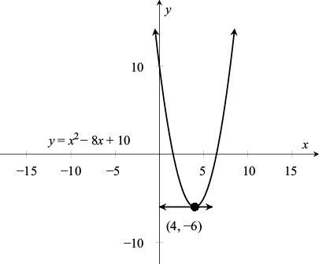

求导运算可以帮助我们确定函数值在何时达到最大或最小。例如，试求抛物线 y = x2 – 8x + 10的最低点的x值。

抛物线最低点处的切线斜率必然等于0。由于 y' = 2x – 8，解方程式2x – 8 = 0可知，当 x = 4时函数的值最小（y = 16 – 32 + 10 = –6）。对于函数 y = f (x)，满足 f ' (x) = 0的x值叫作函数f的“临界点”（critical point）。例如，函数 y = x2 – 8x + 10只有一个临界点： x = 4。
函数值在什么时候最大呢？在上述问题中，由于y= x2 – 8x +10的值可以任意大，因此该函数没有最大值。但是，如果x位于某个区间内，例如，0 G x G 6，那么y值将在其中一个端点处达到最大。在这个例子中，我们发现当x = 0时，y = 10；当x = 6时，y = –2。因此，该函数值在端点 x = 0处达到最大。在一般情况下，我们有下面这条重要定理。
定理（最优化定理）：如果可导函数 y = f (x)在点x*处达到最大或最小值，那么x*一定是函数f的临界点或者一个端点。
我们再思考一下本章开头提出的纸盒体积问题。要解决这个问题，就需要求出下列函数的最大值（x的值必须在0至6之间）：
y = (12 – 2x)2x = 4x3 – 48x2 + 144x
也就是说，我们希望找出y值最大时x的值。由于这个函数是一个多项式，因此我们可以求出它的导数：
y' = 12x2 – 96x + 144 = 12(x2 – 8x + 12) = 12(x – 2)(x – 6)
也就是说，该函数有两个临界点：x = 2和 x = 6。
在端点 x = 0和 x = 6处，纸盒的体积为0，也就是说，体积最小。在另外一个临界点 x = 2，体积最大，即 y = 128立方英寸[1]。